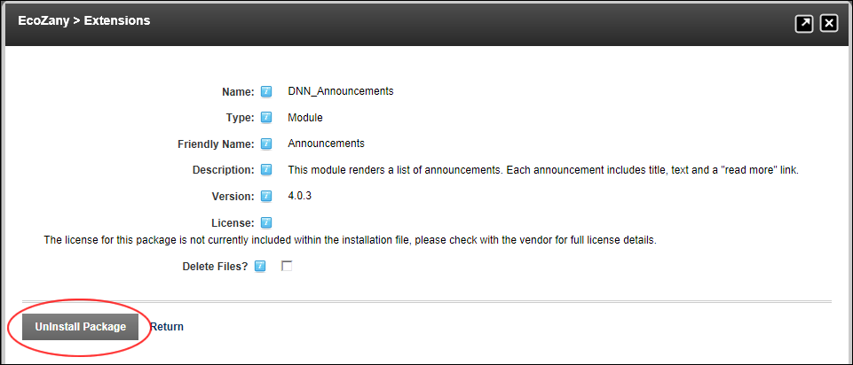

Uninstalling an Extension
How to install any type of extension using the Extensions module. Note: If you are uninstalling a module, all instances of the module on the site are deleted including the module settings and the content within the module. If you do not wish to lose this data, you should consider creating a site template, or exporting the module content before uninstalling it.
- Navigate to Host >
 Extensions.
Extensions.
- Select the Installed Extensions tab.
- Expand the section which the required extension is associated with.
- Click the UnInstall This Extension
 button beside the extension to be uninstalled. This opens the Uninstall Package page.
button beside the extension to be uninstalled. This opens the Uninstall Package page.
- Optional.
at Delete Files to permanently remove the resource files associated with the language. (Warning. Removing the resource files for a language will remove the languages permanently. The only way to regain a language deleted in this manner is to re-enter all of the language values into a new language.)
- Click the UnInstall Package link. This displays the message "Are You Sure You Wish To Delete This Item?"

- Click the Yes button to confirm. This displays the Package Uninstall Logs for you to review.
- Click the Return link to return to the module.